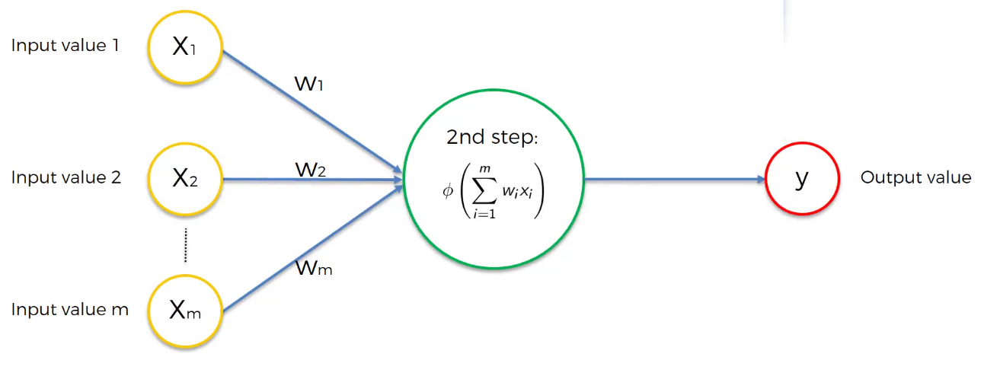
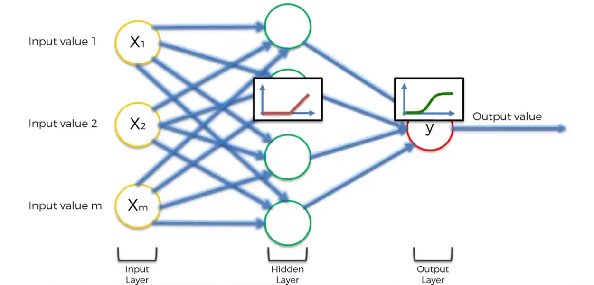

Deep Learning
A recent breakthrough in AI
- Tran B. V. Son
- tranbavinhson.github.io
Deep Learning ?
- Artifical Neural Network
- Supervised Learning
- Recurrent Neural Networks
- Convolutional Neural Networks
- Unsupervised Learning
- Self Orgranizing Maps
- Boltzmann Machines
- Auto Encoders
Let's go
- Perceptron
- Activation Function
- A Neural Network
- Error Function
- How to build own neural networks
- Coding Section
- Addtional Links
Input: $f() = \sum_{i=1}^m w_ix_i$
Activation Function: $\theta$

Activation Function
The main purpose of most activation function is to introduce non-linearity in the network so it would be capable of learning more complex patterns.
- Threshold
- Sigmoid
- Rectifier(ReLu)
- Tanh Funcion
Hidden Layer: ReLu
Output Layer: Sigmoid

Error Function
$$E = \frac{1}{2}\sum_{i=1}^n(y_r - y_p)^2$$
- $y_r$ : real output
- $y_p$ : predicted output
How to minimize Error Function
How to build own neural networks
- Randomly initialize the weights to small numbers close to 0 (not 0)
- Input the first observation of your dataset in the input layer, each feature in one input node
- Forward-Propagation: left -> right. Propagate the activations until getting the predicted result $y_p$
- Compare the predicted result with actual result (Caculate Error Function)
- Back-Propagation: right -> left. The error is back-propagated. Update the weights according to how much they are responsible for the error. The learning rate decides by how much we update the weights
-
- Repeat steps 1->5: Update the weights after each observation : Reinforcement Learning
- Repeat steps 1->5: Update the weights only after a batch of observation : Batch Learning
- When the whole training set passed through the ANN that makes an epoch. Redo more epochs..
Coding Section
Requirements
- Keras - Tensorflow
- Matplotlib - Numpy - Pandas - Sklearn
- Spyder (Don't need but recommend)